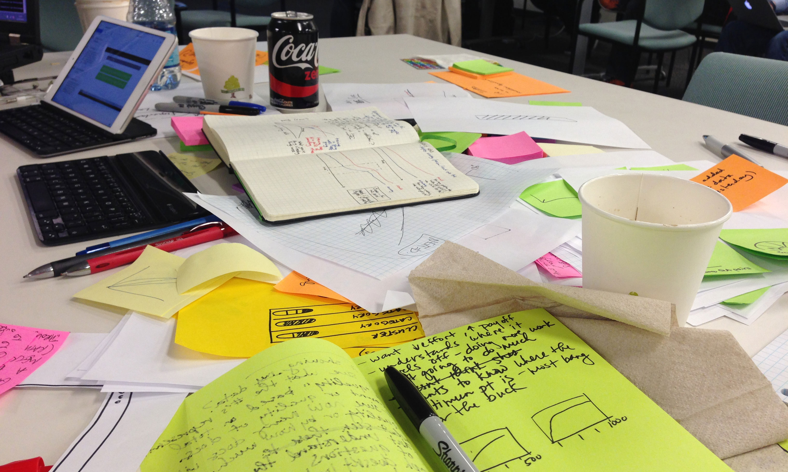

Last week, the IBM Watson Tooling & Methodology team (comprised of PLMs, developers, engineers, and designers) converged in Littleton, Massachusetts, to hold the very first Design Spike. A Design Spike is similar to the Design Sprint method used by Google Ventures. The goal was to rapidly develop, learn and repeat. The mantra for the week was FAIL FAST AND LEARN.
The short-term tactical goal of the tooling team, is to build tools that extend the capabilities of Experience Manager and increase value to the user. In 32 hours, we managed to design, iterate, prototype and validate our assumptions. The insights gained would immediately impact the product development of Ground Truth Tooling for the next 3-months, and influence the long-term strategic vision.
The end goal of the Design Spike was to have an interactive prototype that focused on 4 key areas of tooling: question clustering, question and answer mapping, content ingestion and performance.
Each day started with people volunteering to give a 5 minute lightning talk on a critical topic that would influence the tooling in some way. There were a wide range of topics covered, from error handling and implications of clustering, to tooling for hybrid environments and design inspiration.
The first stage of a design spike was to UNDERSTAND. Revaluate the synthesized research that had been completed and get the team aligned. @ELIZONDO COSTA, RICARDO shared the AS-IS Experience of our user by walking us through the Journey Map. This helped to align the team on the major pain points we were trying to solve.
created a single UI Framework for each team to use. This allowed them to focus on the unique challenges of their tool without needing to exert unnecessary time and attention on the surrounding container. This also gave a more consistent look and feel when each team presented their prototype during the final Playback.
Angela covered design themes and how it would impact the user, interaction guidelines, and how to enable our user.
We then divided into teams that included one prototyper, engineer, designer and/or PLM. Each team would focus on one tool: question clustering, question and answer mapping, content ingestion and performance. Using IBM Design Thinking, we then started brainstorming the future experience. We then Played Back our Experience Map to the overall group.
The next stage of the design spike was to DIVERGE. We did this by sketching 5 ideas in 10 minutes, then 1 idea in 5 minutes, then 2 storyboards in 15 minutes. Getting all your ideas out on paper, regardless if they're good or bad, can generate huge breakthroughs by forcing people to let go of inhibitions.
We then Played Back to our team, zen voted, then remixed our story board to eventually converge on the best ideas.
Prototyping and validating is the third stage of a design spike. Armed with our new to-be scenario, we began to prototype the user flow with paper. We determined what the user story was going to be, and what assumptions we needed to test. Testing with other members of the team allowed us to refine our prototype before testing on proxy users. No matter how big or small, testing can garner invaluable insights that wouldn’t have been uncovered otherwise.
We quickly transitioned into digital prototypes and incorporated the useful feedback we’d received from our users. For the next 2 days, we continued to flush out the user interactions, test on proxy users and Played Back to the overall team.
Thursday morning, we held our final Playback and shared our end-to-end prototypes with our key stakeholders and the rest of Watson. The 3 1/2 day Design Spike encouraged team collaboration and allowed our team to ideate quickly and generate usable prototypes.